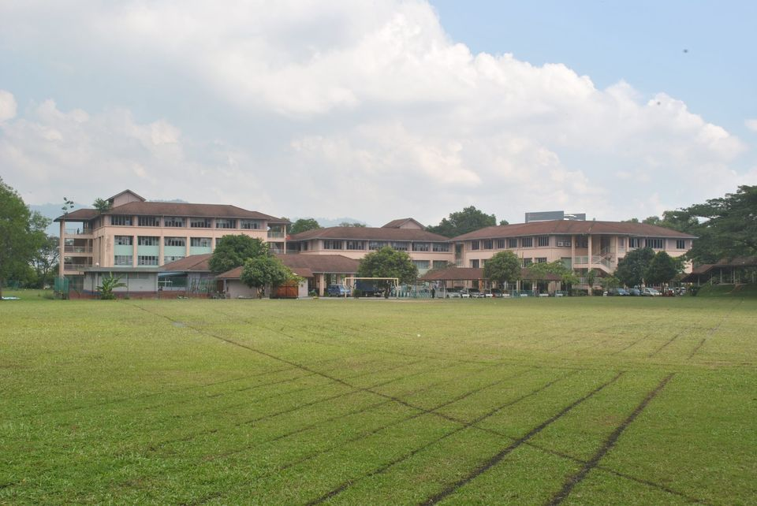
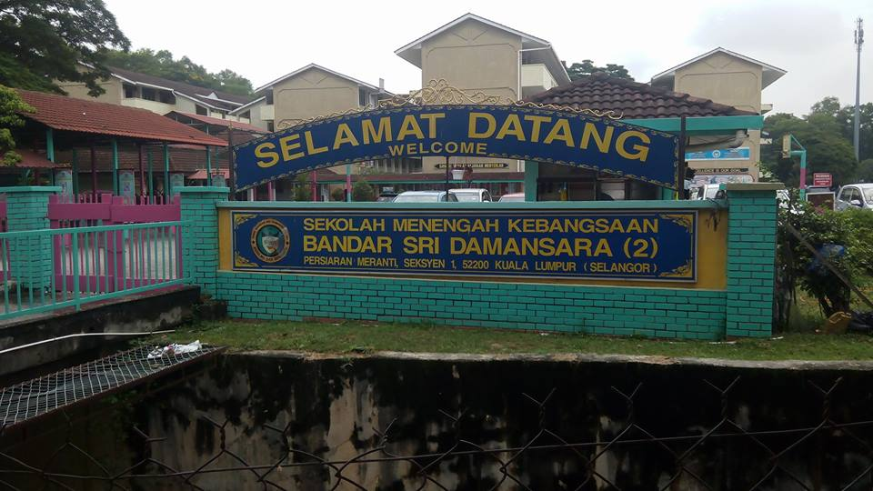

My Education
Primary School

The name of my primary school was Sekolah Kebangsaan Bandar Sri Damansara 1. It takes 5 minutes to go there from my house which is pretty near. I go there with school bus every morning. My school started at 7.30a.m. everyday. Every morning we have an assembly before we entering our class to start the learning session.
Secondary School

The name of my secondary school was SMK Bandar Sri Damansara 2. The location was behind my primary school. I walk to the school with my sister every morning. There are a lot of good memory at the school that makes me miss the school so bad. The teacher was so nice which I had fun study at this school on that time.
Diploma Level
I graduate in Diploma of Information Management at UiTM Johor, Segamat Campus. At first, it was hard for me to be far from home because it was my first time. I always homesick but with the presence of my roommate and friends I started to be used to it. During my diploma year it was very challenging but at the same time I'm excited to learn new things. Moreover, I am grateful to have the opportunity to study in class before ODL(Online Distance Learning) started.